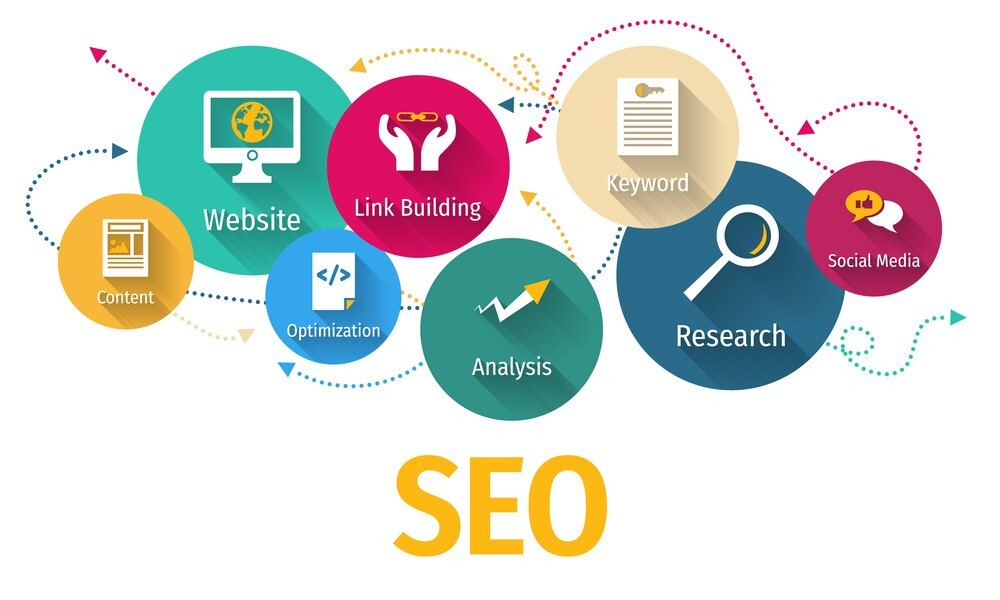

1. Frontend vs. Backend :
Frontend: Refers to everything the user interacts with directly in the browser—HTML, CSS, and JavaScript form the basis of frontend
development.
Backend: Involves server-side operations like database management, server logic, authentication, and API interactions, typically
implemented in languages like Python, Java, PHP, or Node.js.
2. HTML (Hypertext Markup Language) :
The standard language for creating web pages. It uses a system of tags to define the structure and content of web pages, including
headings, paragraphs, images, links, and more.
3. CSS (Cascading Style Sheets) :
A stylesheet language used to describe the presentation of HTML content, including layout, colors, fonts, and responsiveness. CSS
allows for the separation of content and design, enhancing the user experience.
4. JavaScript :
A programming language that enables dynamic and interactive elements on websites, such as animations, form validation, and API requests.
JavaScript runs in the browser, enhancing the functionality beyond static HTML and CSS.
5. Responsive Design :
A web design approach that makes web pages render well on various devices and screen sizes by using flexible grids, layouts, and media
queries. It ensures accessibility and usability across desktops, tablets, and smartphones.
6. SEO (Search Engine Optimization) :
The practice of optimizing web content and design to improve the ranking of a website in search engine results. It involves keyword
research, content optimization, link building, and improving site speed and usability.
7. API (Application Programming Interface) :
A set of rules and protocols for building and interacting with software applications. APIs enable different software systems to
communicate and share data, essential for integrating third-party services like payment gateways, social media, and more.
8. HTTP/HTTPS (Hypertext Transfer Protocol/Secure) :
HTTP is the protocol used for transmitting data over the web. HTTPS adds a layer of security through encryption, ensuring that the data
exchanged between the server and client is secure, which is crucial for protecting sensitive information.
9. Web Hosting :
A service that provides the infrastructure to make websites accessible on the internet. It involves storing website files on a server
and managing domain names, bandwidth, and data storage.
10. Content Management System (CMS) :
Software that allows users to create, manage, and modify content on a website without needing specialized technical knowledge.
Popular CMSs include WordPress, Joomla, and Drupal.